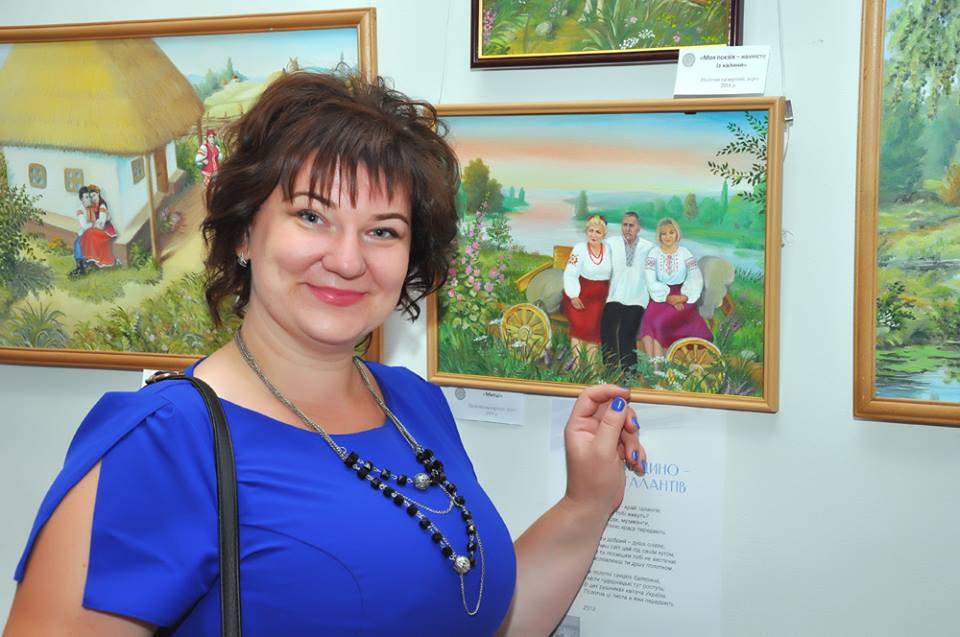
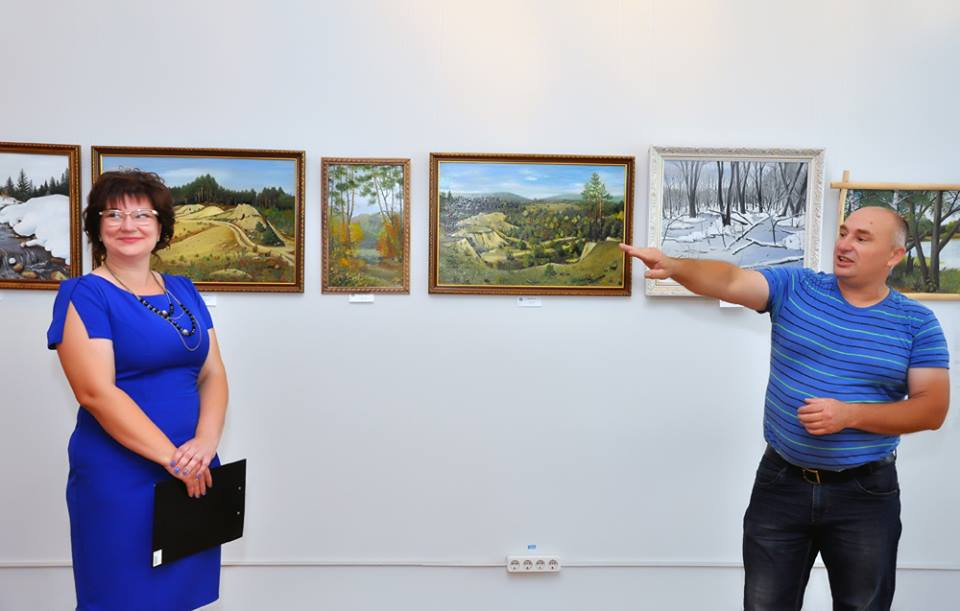
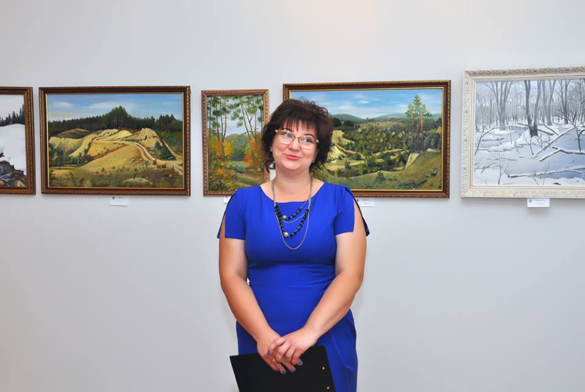
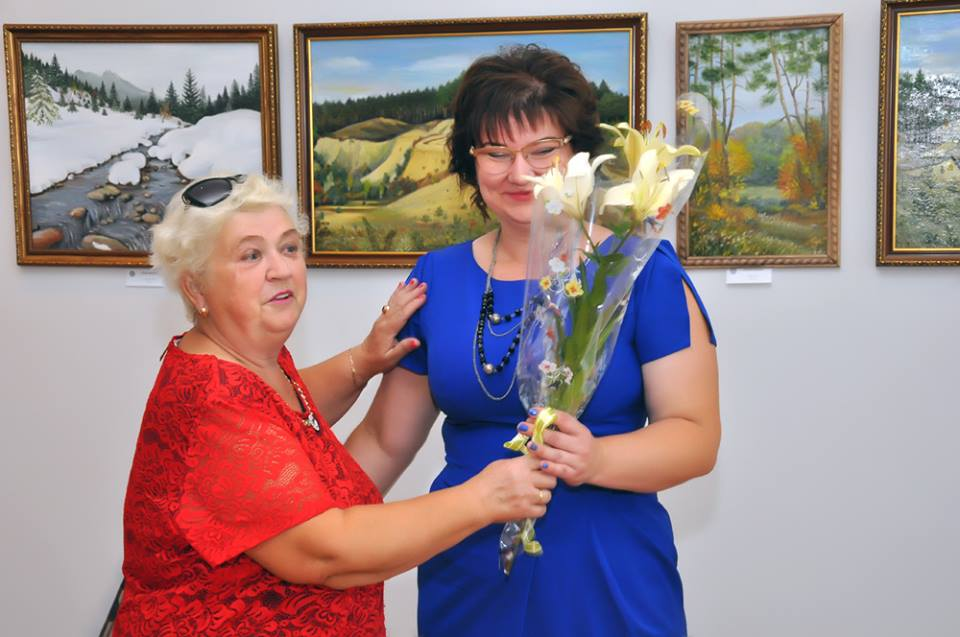
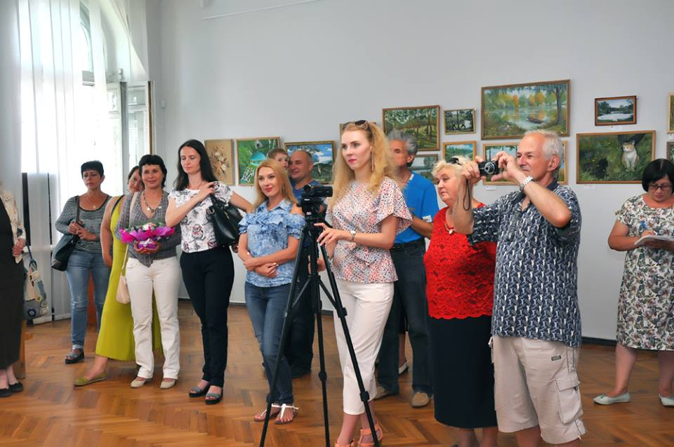
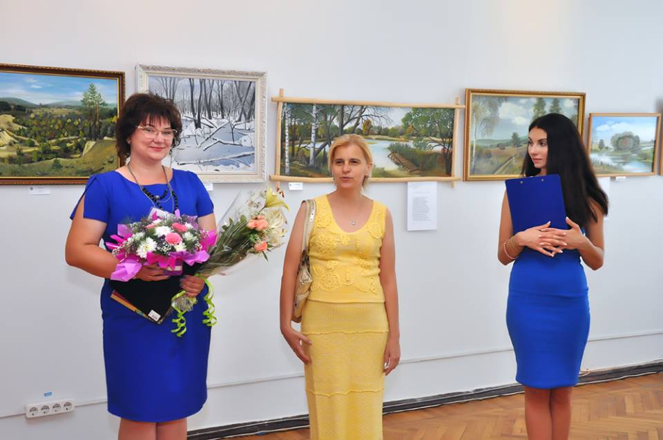
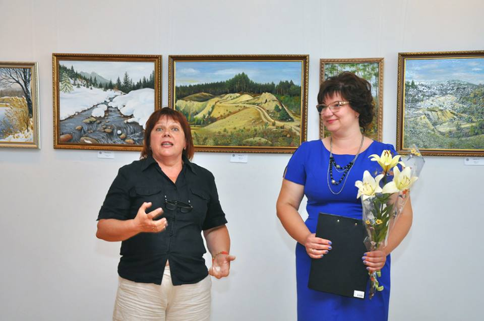
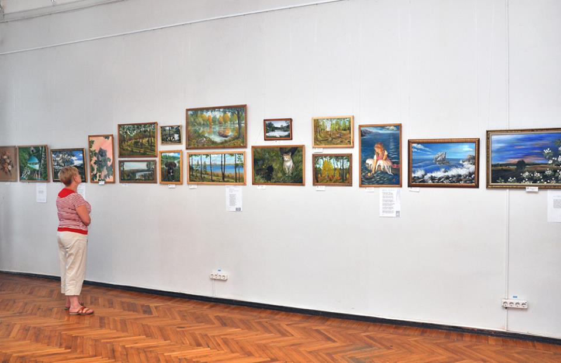

Ці полотна барвисті, на життя моє схожі...

{kind=link}
Живопис Тетяни Пархоменко вражає цікавим і своєрідним баченням навколишнього світу, яскравістю і надзвичайною майстерністю.
В цьому пересвідчилися численні відвідувачі її персональної виставки, що відкрилась 5 липня в Обласному організаційно-методичному центрі
культури і мистецтва. І не випадково виставка проходить під поетичним гаслом «Ці полотна барвисті на життя моє схожі…», бо в останні роки
майстриня доповнює свої картини віршованими рядками.
Щоб жінці розкрити свій талант, потрібна неабияка підтримка родини.
Тетяна Пархоменко – щаслива жінка: вона мати трьох прекрасних донечок,
любляча дружина, успішний банківський службовець і талановита майстриня,
що вкладає в свої роботи щирість свого серця і красоту душі, отримуючи від своєї
творчості величезне задоволення і розраду. Свою першу персональну виставку в Харкові,
на якій представлено майже півсотні полотен, що написані в останні десять років, Тетяна присвятила своєму чоловікові Юрію і всій своїй родині.

{kind=link}
Світ живопису Тетяни Пархоменко – це її край, який починається від рідного села Лиман, відкриває мальовничі краєвиди Зміївщини і простягається
далеко у всесвіт, але коренями своїми переходить в чуття і думки художниці. У своїй творчості майстриня надає перевагу реалістичній манері, багато уваги
приділяє кольору, її полотна яскраві і емоційні. Тетяна не професійний художник і своїм головним вчителем вважає природу.
Твори Тетяни Пархоменко відомі на рідній їй Зміїівщині, вони експонувались на різних виставках і були високо оцінені фахівцями.
Відкриття персональної виставки в обласному центрі – це дуже значна
подія для художниці. Привітати її прийшли рідні, друзі, колеги по
творчому цеху. Високу оцінку творчим роботам Тетяни, що представлено на виставці, дали голова спілки талантів Зміївщини Петровська Галина Михайлівна, спеціаліст Центру культури і мистецтв Олена Бондарчук, харківські художники
Олексій Буднік, Ірина Ермакова, Алла Будніченко, художник-графік Наталія Войценя.
А маленькі племінниця і донечка художниці прочитали її вірші, чим заслужили щирі оплески присутніх.



{kind=link}
{kind=link}
{kind=link}
Всі, хто відвідав виставку Тетяни Пархоменко, отримали величезне задоволення і багато яскравивх емоцій. І не викликає ніяких сумнівів те, що у молодої художниці велике майбутнє.



{kind=link}
{kind=link}
{kind=link}
Така замітка з'явилася після виставки у газеті "Вісті Зміївщини".